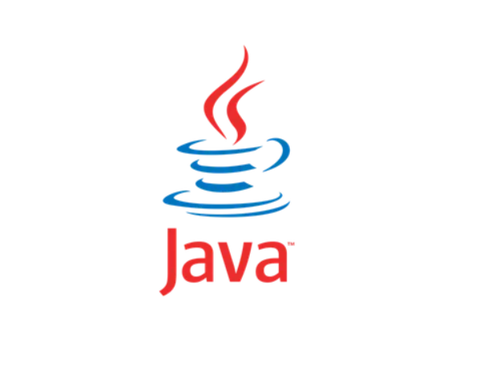

ABOUT ME
MY NAME IS MUHLURI MUDAKA AND I'M PROUDLY TSONGA. I AM CURRENTLY STUDYING COMPUTER SCIENCE AT TSHWANE UNIVERSITY OF TECHNOLOGY (TUT). I'M A DEPENDABLE AND ORGANIZED INDIVIDUAL WHO ENJOYS HELPING AND KEEPING THINGS RUNNING SMOOTHLY. ALWAYS WILLING TO LEARN, AND LOVE CHALLENGES AS WELL AS REACHING NEW MILESTONES. ALWAYS READY TO STEP IN AND HELP WHENEVER I'M NEEDED, WITH A POSITIVE ATTITUDE AND FOCUS ON GETTING THINGS DONE RIGHT.
TECHNICAL SKILLS
-
 JAVA
 HTML
HTML
 CSS
CSS
 JAVASCRIPT
JAVASCRIPT
 MySQL
PYTHON
MySQL
PYTHON
 GIT
GIT
PROJECTS
No projects yet.
EDUCATION
Secondary Education
2017 - 2021Gwambeni Secondary School
Completed secondary education and obtained a National Senior Certificate (NSC).
Tertiary Education
2022 - PresentTswane University Of Technology
Currently pursuing a Bachelor’s Degree in Computer Science.